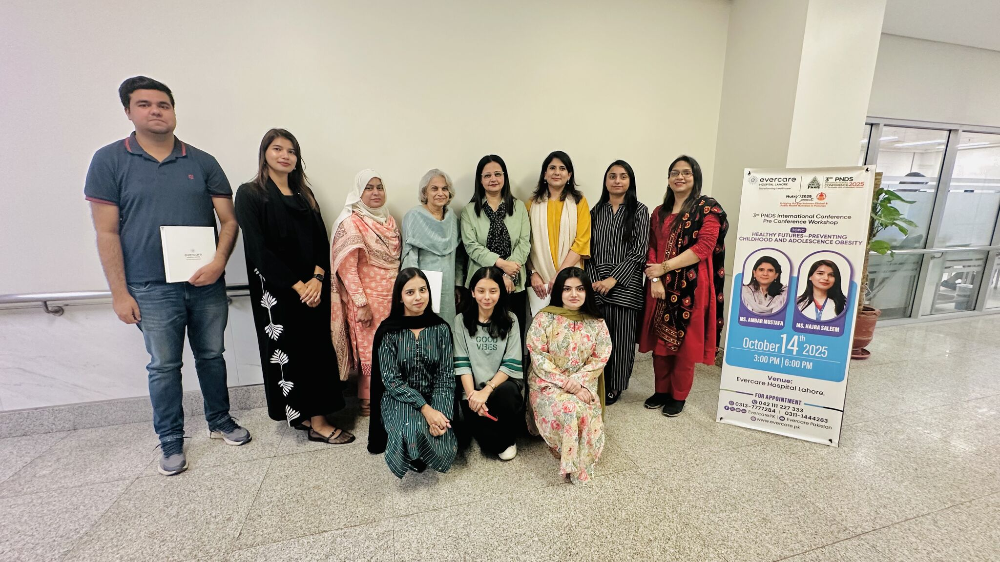
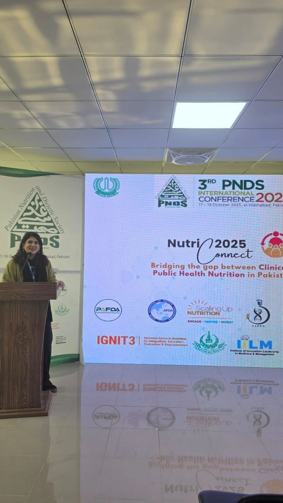
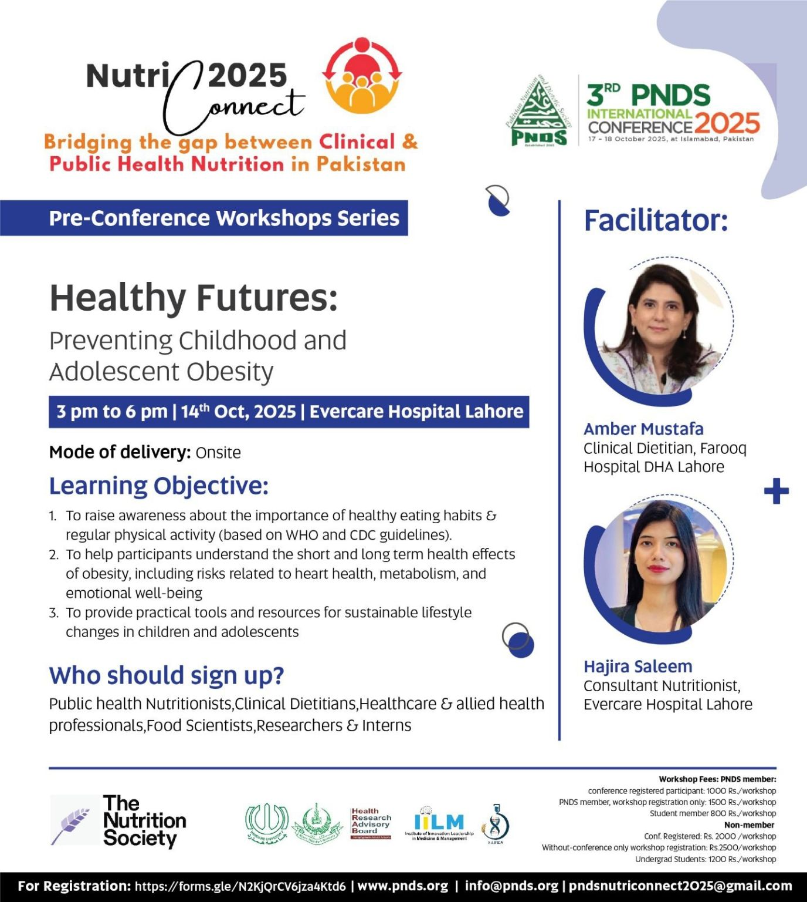
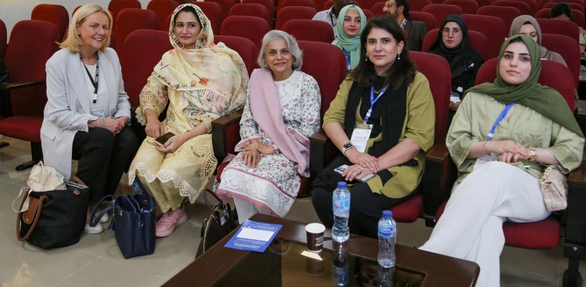

Date: 17–19 October 2025 (main conference); pre-conference workshops on 14 October 2025
Location: Islamabad (main conference); Evercare Hospital, Lahore (pre-conference workshops)
Organization: Pakistan Nutrition & Dietetic Society (PNDS)
Theme: "Bridging the gap between Clinical & Public Health Nutrition in Pakistan"
NutriConnect, the 3rd PNDS International Conference, was one of the biggest gatherings of dietitians, nutritionists, and public health professionals in Pakistan this year — bringing together over 30 speakers, panel discussions, and workshops on nutrition research, policy, and clinical practice, with delegates joining from across Pakistan and abroad.
Bridging clinical and public health nutrition
The conference theme captured something I think about often in clinical practice: the gap between what happens in a one-on-one consultation and what's needed at a population level to actually shift nutrition outcomes in Pakistan. Sessions covered everything from clinical nutrition therapy and emerging research, to community nutrition programmes and food policy — a reminder that individual patient care and public health nutrition need to move together.

It was a privilege to be part of the conference alongside an international line-up of speakers and to connect with colleagues from across the country working on shared challenges in nutrition and dietetics.

Pre-conference workshop: Healthy Futures — Preventing Childhood & Adolescent Obesity
Ahead of the main conference, I co-facilitated a pre-conference workshop at Evercare Hospital, Lahore, titled "Healthy Futures: Preventing Childhood and Adolescent Obesity," alongside Ms. Hajra Saleem (Consultant Nutritionist, Evercare Hospital Lahore). The session ran from 3:00–6:00 PM on 14 October 2025 and was aimed at public health nutritionists, clinical dietitians, healthcare and allied health professionals, food scientists, researchers, and interns.
The learning objectives were to:
- Raise awareness of the importance of healthy eating habits and regular physical activity, based on WHO and CDC guidelines.
- Help participants understand the short- and long-term health effects of childhood obesity, including risks related to heart health, metabolism, and emotional wellbeing.
- Provide practical tools and resources for sustainable lifestyle changes in children and adolescents.

Pre-conference workshop: Management of Malnutrition in Children Under 5
The second pre-conference session, also held at Evercare Hospital, Lahore, focused on the management of malnutrition in children under 5 — covering wasting, stunting, and underweight, and how clinical and community nutrition teams can identify and manage these conditions early. The session was led by Mr. Faran Khan and Ms. Rashida Javed, with attendees drawn from the same mix of dietitians, public health professionals, and students as the obesity-focused workshop.
Together, the two pre-conference workshops bookended a key message from the conference as a whole: nutrition challenges across the lifespan — from undernutrition in young children to rising obesity in adolescents — require both clinical skill and community-level awareness to address.

Have questions about nutrition for your child, or about your own metabolic and weight goals? Book a consultation.